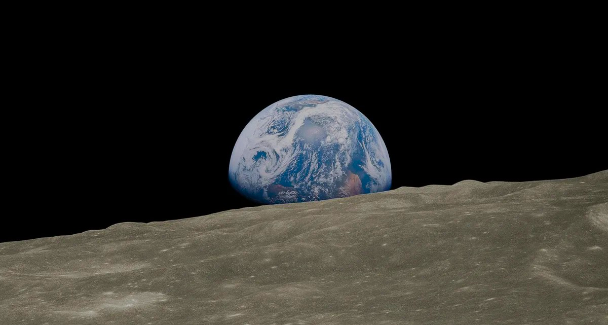
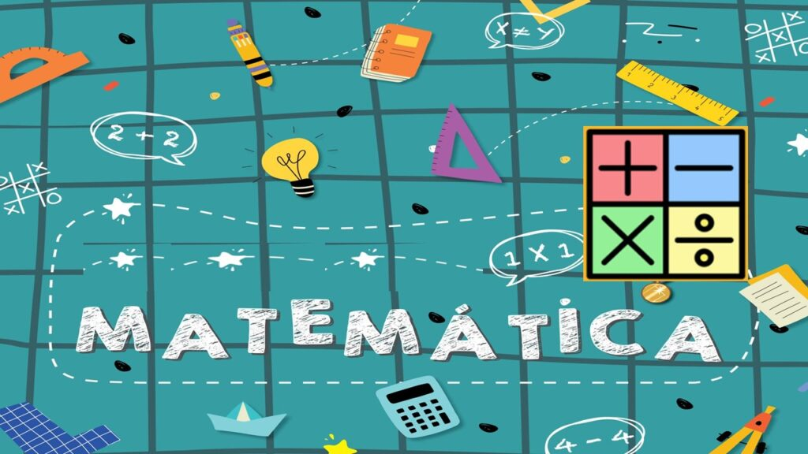

Tecnologia👨💻
Google Essentials: Uma Nova Era de Acesso a Jogos e Aplicativos Android no Windows
O Google anunciou o lançamento do Google Essentials, uma nova central de aplicativos e jogos para Windows que oferece acesso direto a aplicativos e jogos Android otimizados para serem utilizados por meio de emulação no sistema operacional da Microsoft. Esta inovação representa um avanço significativo na integração entre os serviços do Google e o Windows, prometendo uma experiência mais fluida e integrada para os usuários.
A central Google Essentials permite aos usuários acessar facilmente jogos e aplicativos da Play Store diretamente do menu Iniciar do Windows, sem a necessidade de navegar até um navegador e realizar downloads adicionais. Entre os aplicativos disponíveis estão o Play Games, Fotos, Mensagens, Drive, Docs e Calendário, além de uma variedade de ferramentas de produtividade.
Além disso, o Google informou que o pacote Essentials oferece atalhos para ferramentas de produtividade e que os usuários de dispositivos HP que vêm com o pacote pré-instalado terão direito a um período de testes de dois meses do plano de 100 GB do Google One. A HP será a primeira a oferecer o Google Essentials em seus computadores, com planos de expansão para outras marcas nos próximos meses.
O Google Essentials também promete facilitar o acesso aos principais serviços da empresa no PC, com a possibilidade de desinstalação a qualquer momento, garantindo que os usuários mantenham o controle sobre sua experiência. A iniciativa reflete o compromisso do Google em oferecer soluções que melhoram a usabilidade e a integração de seus serviços em diferentes plataformas.
Este lançamento é um passo importante para o Google, pois amplia a presença de seus serviços no ecossistema Windows, potencialmente aumentando sua base de usuários e fortalecendo sua posição no mercado de aplicativos e jogos. A expectativa é que essa integração traga benefícios tanto para os usuários quanto para os desenvolvedores, proporcionando uma experiência mais rica e acessível no uso diário de aplicativos e jogos.
Economia💰
Dólar em Declínio: A Repercussão das Políticas Monetárias e o Impacto no Mercado Brasileiro
O mercado financeiro presenciou uma significativa desvalorização do dólar frente ao real, após o anúncio de Jerome Powell, presidente do Federal Reserve, sobre a possibilidade de cortes nas taxas de juros nos Estados Unidos. A moeda norte-americana, que já vinha apresentando uma tendência de queda, intensificou seu recuo, ultrapassando a marca de 2% de desvalorização.
Em um discurso proferido no simpósio econômico de Jackson Hole, Powell sinalizou que "chegou a hora" de o Fed iniciar um ciclo de afrouxamento monetário, em resposta aos crescentes riscos para o mercado de trabalho e à inflação que se aproxima da meta de 2%. Essa declaração provocou uma reação imediata nos mercados globais, com investidores ajustando suas expectativas para a política monetária futura dos EUA.
No Brasil, o impacto foi notável, com o dólar à vista caindo para R$ 5,49, uma queda de 1,77%. Paralelamente, o Ibovespa, principal índice da bolsa brasileira, operava em alta, refletindo um otimismo renovado entre os investidores. A perspectiva de juros mais baixos nos EUA tende a reduzir os rendimentos dos Treasuries, incentivando o apetite por ativos de maior risco e, consequentemente, favorecendo moedas emergentes como o real.
A mudança na política monetária norte-americana também teve repercussões no mercado de juros futuros do Brasil, com a curva de juros apresentando quedas sólidas. Isso sugere que os investidores estão projetando que uma taxa de juros mais baixa nos EUA poderia permitir uma Selic menor no Brasil, influenciando positivamente a economia nacional.
Os operadores do mercado financeiro agora precificam uma probabilidade de 65% para um corte de 25 pontos-base na próxima reunião do Fed em setembro, com uma chance de 35% para uma redução ainda maior de 50 pontos-base. Essa expectativa de afrouxamento monetário até o final do ano é um indicativo de que os investidores estão buscando alternativas de investimento mais rentáveis, abandonando o dólar em favor de moedas de mercados emergentes.
O cenário descrito acima representa uma janela de oportunidade para o Brasil, que pode se beneficiar de um ambiente de juros mais baixos internacionalmente para fortalecer sua economia e atrair investimentos. No entanto, é essencial acompanhar os próximos passos do Federal Reserve e as reações do mercado para entender completamente as implicações dessas mudanças na política monetária global.
Ciência🌌
Cientistas Chineses Desenvolvem Método para Produzir Água a Partir do Solo Lunar
Em um avanço significativo para a exploração espacial e a sustentabilidade em missões lunares, cientistas chineses desenvolveram um método inovador para produzir água utilizando solo lunar. A descoberta, anunciada pela emissora estatal CCTV, pode ser um marco para o projeto de longa data da China de estabelecer uma base permanente na Lua.
A técnica, que se baseia na reação do hidrogênio presente nos minerais do solo lunar com outros elementos quando aquecidos a altas temperaturas, resulta na produção de vapor d'água. Este processo foi possível graças às amostras coletadas pela missão Chang'e-5 em 2020, a primeira missão a trazer amostras lunares para a Terra em 44 anos.
Os pesquisadores da Academia Chinesa de Ciências descobriram que uma tonelada de solo lunar poderia produzir entre 51 a 76 kg de água. Isso equivale a mais de cem garrafas de 500 ml, ou o consumo diário de água potável para cerca de 50 pessoas. A técnica não apenas promete apoiar a presença humana na Lua, mas também tem potencial para a produção de combustível de foguete de hidrogênio, o que poderia revolucionar a exploração espacial para além da órbita lunar.
A China tem planos ambiciosos para a exploração lunar, com a promessa de instalar uma "estação básica" no polo sul lunar até 2035 e uma estação espacial em órbita da Lua até 2045. A recente descoberta é um passo significativo em direção a esses objetivos, oferecendo uma solução viável para um dos maiores desafios da exploração espacial: a disponibilidade de recursos vitais como a água.
A importância dessa descoberta vai além da viabilidade de bases lunares. A água lunar pode ser usada para criar combustível de foguete de hidrogênio, como apontado pelo administrador da NASA, Bill Nelson. Isso poderia impulsionar missões para Marte e outros destinos no sistema solar.
O anúncio ocorre em um momento em que a China já está realizando experimentos com amostras lunares trazidas pela missão Chang'e-6, que coletou material do lado afastado da Lua. A capacidade de produzir água no local reduziria significativamente a necessidade de transportá-la da Terra, diminuindo os custos e aumentando a eficiência das missões espaciais.
Este desenvolvimento representa um avanço notável na corrida espacial e destaca o crescente domínio da China no campo da exploração lunar. Com a possibilidade de Pequim estabelecer uma presença dominante nos locais ricos em recursos da Lua, a descoberta coloca em perspectiva a competição global pelo espaço e seus recursos valiosos.
Educação📚
Despertando o Interesse Matemático: Uma Proposta Pedagógica Inovadora
Uma inovadora proposta pedagógica desenvolvida por uma pesquisadora da Universidade de São Paulo (USP) está redefinindo o ensino da matemática, despertando o interesse dos alunos pelo aprendizado da disciplina. A metodologia, denominada "Resolução de Problemas", integra a educação financeira ao currículo escolar, utilizando práticas como o escambo, orçamento familiar e orçamento público para engajar os estudantes em desafios matemáticos.
A pesquisa, conduzida pela educadora Débora Cardoso do Amaral, foi aplicada a alunos do 6º ano do ensino fundamental de uma escola municipal em Santos, São Paulo. O projeto, que durou 25 encontros ao longo do ano letivo, demonstrou um aumento significativo na percepção dos alunos sobre a relevância da matemática no cotidiano, além de números e operações, destacando sua importância no raciocínio indutivo e na tomada de decisões.
Sob a orientação do professor Júlio César Augusto do Valle, especialista em políticas públicas de educação, a dissertação de mestrado apresentada no Instituto de Matemática e Estatística (IME) da USP enfatiza a necessidade de uma abordagem mais ativa dos alunos em seu próprio aprendizado. Através da investigação, reflexão e debate, os estudantes são incentivados a sintetizar e formalizar os conteúdos abordados, promovendo uma compreensão mais profunda da matéria.
O trabalho de Débora Amaral é considerado relevante por apontar caminhos para a inclusão de temas de educação financeira na prática pedagógica, conectando-os a questões sociais importantes, como o orçamento público municipal. A atividade foi adaptada à realidade dos diferentes municípios brasileiros, mostrando que é possível tornar o ensino da matemática mais significativo e aplicável ao dia a dia dos alunos.